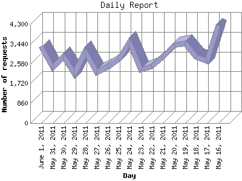

The Daily Report identifies the activity for each day within the reporting period. Remember that one page hit can result in several server requests as the images for each page are loaded.

| Day | Number of requests | Number of page requests | |
|---|---|---|---|
| 1. | May 16, 2011 | 4,243 | 1,504 |
| 2. | May 17, 2011 | 2,688 | 1,316 |
| 3. | May 18, 2011 | 2,884 | 1,233 |
| 4. | May 19, 2011 | 3,473 | 1,156 |
| 5. | May 20, 2011 | 3,385 | 1,507 |
| 6. | May 21, 2011 | 2,852 | 1,147 |
| 7. | May 22, 2011 | 2,473 | 1,390 |
| 8. | May 23, 2011 | 2,311 | 1,087 |
| 9. | May 24, 2011 | 3,504 | 1,477 |
| 10. | May 25, 2011 | 2,753 | 1,201 |
| 11. | May 26, 2011 | 2,436 | 706 |
| 12. | May 27, 2011 | 2,195 | 1,130 |
| 13. | May 28, 2011 | 3,097 | 1,797 |
| 14. | May 29, 2011 | 2,156 | 892 |
| 15. | May 30, 2011 | 2,890 | 1,270 |
| 16. | May 31, 2011 | 2,419 | 913 |
| 17. | June 1, 2011 | 3,322 | 1,415 |
Most active day May 28, 2011 : 1,797 pages sent. 4,243 requests handled.
Daily average: 1,243 pages sent. 2,887 requests handled.
This report was generated on June 2, 2011 12:48.
Report time frame May 16, 2011 00:01 to June 2, 2011 00:00.
| Web statistics report produced by: analog 6.0 / Report Magic 2.21 |